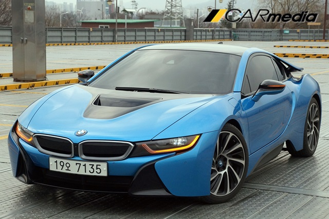
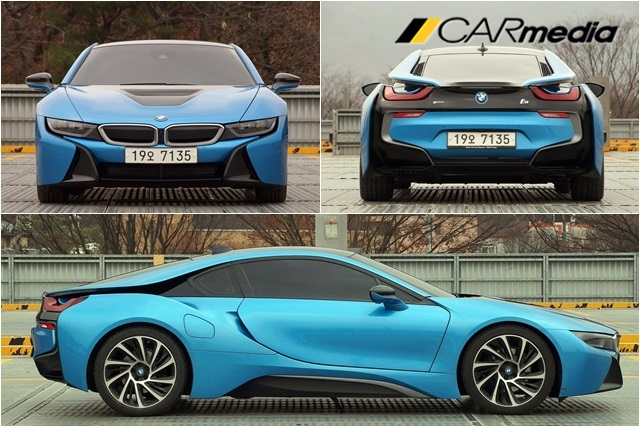
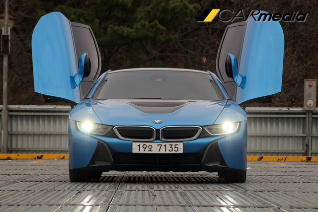
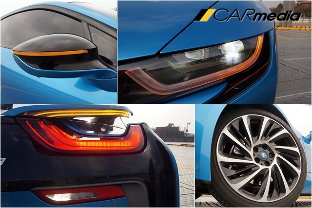
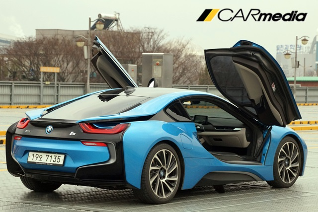
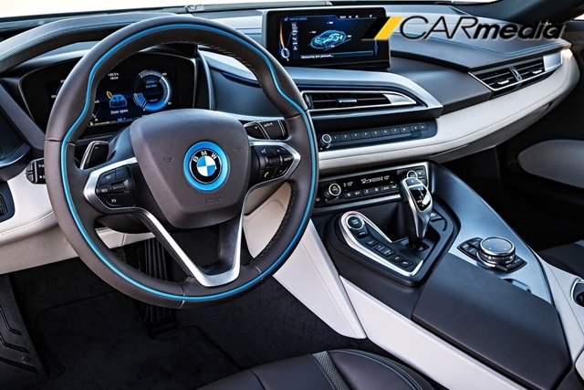
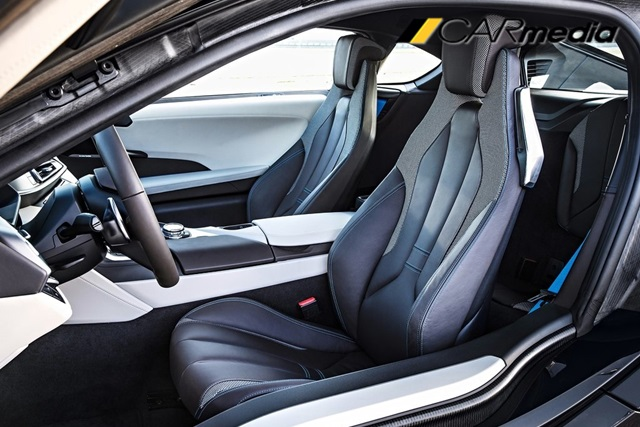
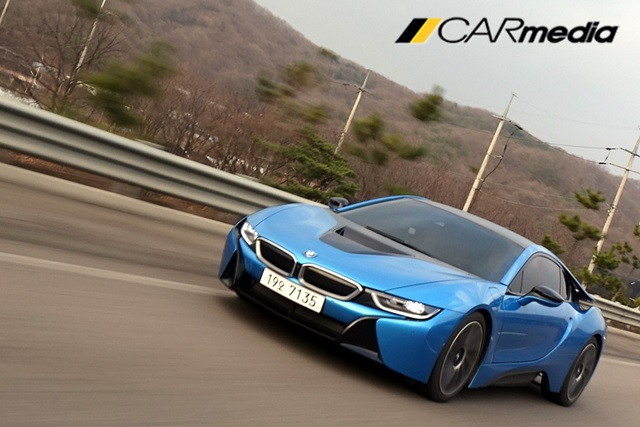
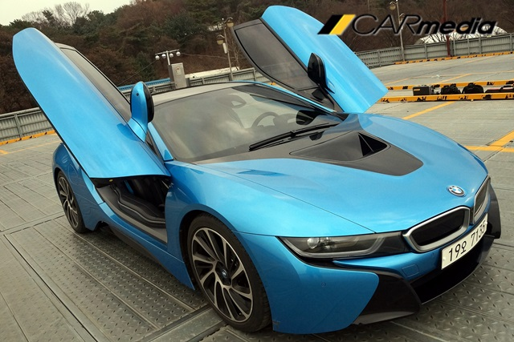
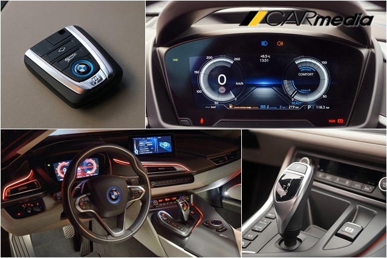

경쟁상대 없는 ‘개척자’, BMW i8
【카미디어】 장진택 기자 = BMW i8은 한 마디로 ‘개척자’다. 새로운 장르를 만들었기 때문에 경쟁자가 없다. 정부에서는 이 차를 플러그인 하이브리드 자동차로 분류하지만, 다른 플러그인 하이브리드 자동차들과 생김새나 구조가 많이 다르다. 혹자들은 이 차의 외모나 가격 등을 견주어 ‘슈퍼카’로 보기도 한다. 2억원이나 하는 날렵하게 생긴 스포츠카라서 그럴 수도 있겠지만, 이 차는 걸출한 성능을 뿜어내는 슈퍼카가 아니다. 최고 속도나 마력, 토크 등을 뽐내기 보다 지구를 걱정하며 딱 필요한 힘만 만들어 쓰는 ‘친환경’ 차다. 세상에 이런 차는 현재 BMW i8 밖에 없다. BMW i8이 얼마나 유별난 ‘개척자’인지는 아래 맥가이버 시승 영상을 통해 확인할 수 있다. 1박2일 시승했던 배한성 씨는 “스포츠카는 보통 우샤인 볼트 같은 육상선수를 떠올리게 되는데, i8은 체조선수가 도움닫기하는 것처럼 ‘사뿐사뿐’ 달린다”고 평했다.
영상으로도 봤겠지만, BMW i8은 일견 멋지다. 두 개로 나뉜 키드니 그릴만 익숙할 뿐, 어떤 차에서도 못 봤던 면과 라인들이 i8을 휘감고 있다. 철판으로 만들었다면 이런 식의 ‘묘기 같은’ 굴곡을 찍어낼 수 없다. 편평한 철판이 이리저리 눌리다가 찢어지거나 이상하게 찌그러질 수 있기 때문이다. 외부 패널을 플라스틱으로 찍어냈기 때문에 어떤 차에서도 볼 수 없었던 유연함을 만들 수 있었다.
그런데 이 유연한 굴곡이 디자이너의 ‘느낌’만으로 그린 게 아니다. 공기저항을 덜 받고 유연하게 공기를 흘려 보내도록 ‘역학적으로’ 연구된 형태다. 영상에서도 언급했지만, 테일램프 사이를 뚫고 흐르는 공기가 차 뒤에서 갑자기 뭉쳐지면서 생기는 소용돌이(와류)를 방지해 주기 때문에 보다 안정적으로 고속 주행을 즐길 수 있다.
  공기저항을 줄이는 노력만큼이나 무게를 줄이는 노력도 인상적이다. 알루미늄으로 기본 골격을 만들어, 앞에는 전기모터, 중간엔 배터리, 뒤에는 엔진을 넣은 뒤, 탄소섬유로 만든 실내 골격을 얹었다. 무게를 줄이면서 강성을 지키기 위해 값비싼 신소재를 썼고, 서스펜션에 붙은 각종 구조물도 (무게를 줄이기 위해) 딱 필요한 굵기로 만들었다. 차 전체가 ‘경량화’에 신경 쓰면서 시트 역시 모두 ‘수동식’으로 집어 넣었다. “2억원 짜리 차에 전동식 시트도 없다니!”라며 불평하지만, 어쩔 수 없다. 이 차는 허리띠를 바짝 조여 메 듯 ‘경량화’에 신경 썼기 때문이다. 그 결과 200kg 정도인 배터리를 넣고도 무게가 1,500kg 밖에 되지 않는다. 폭스바겐 골프가 1,430kg인걸 감안하면 고개를 끄덕이고도 남을 수치다.
 i8은 전혀 다르게 만든 차라서 달리는 느낌도 전혀 새롭다. 문짝을 위로 열고 타는 것도 새롭지만, 스타트 버튼을 누른 후부터 그 이상의 놀라움이 시작된다. 배터리가 충전돼 있으면 일단 전기모터의 힘으로 ‘스르륵’ 움직인다. 아무 소리도 내지 않으면 보행자가 위험할 수 있기 때문에 고압전류가 흐르는 듯한 소리를 바닥에 ‘슬며시’ 뿌린다. 가속패달을 꾹 밟으면 이내 엔진에 시동이 걸리면서 ‘상큼한’ 가속이 시작된다. 단번에 ‘경쾌하다’는 감탄사가 터져 나온다.

시속 100km까지 4.4초만에 가속되는 ‘괴력’이지만, 유럽산 슈퍼카와는 사뭇 다르고, 특히 미국산 머슬카와 정반대 느낌이다. 럭비선수의 질주와 체조선수의 도움닫기 정도의 차이랄까? 가속패달 한 번 밟았을 뿐인데 탄소섬유의 ‘참을 수 없는’ 가벼움이 몸속을 파고 든다. 몸이 가벼우니, 몸놀림이 매우 절묘하다. 운전대를 돌리면 1.5톤의 몸집에 아스팔트에 바짝 붙어 몸을 뒤튼다. 앞바퀴는 전기모터로, 뒷바퀴는 엔진으로 따로 굴리는데, 따로 논다는 생각이 전혀 들지 않는다. 시속 110km 이하에서는 역대 최고로 민첩하게 반응한다. 로터스에 견주어도 부족하지 않은 몸놀림이다. 하지만 그 이상의 스피드에선 장담하지 못하겠다. i8 정도면 고속 움직임도 체크해야 하는데, 미처 서킷 시승까진 준비하진 못했다.
  i8과 함께 했던 2박3일의 드라이브는 아주 뿌듯했다. 아름다운 여배우과 팔짱을 끼고 홍대앞을 걷는 기분이었는데, 이 여배우가 경제관념까지 뚜렷해서 ‘알뜰살뜰’한 느낌이랄까? i8은 슈퍼카만큼 멋지고, 그만큼 달려주고, 하지만 웬만한 중형세단보다 경제적인 차다. 배터리에 가득 충전하면 전기모터만 돌려서 시속120km까지 37km를 달릴 수 있다고 하니, 웬만한 출퇴근은 기름 한 방울 쓰지 않고 ‘전기차’처럼 탈 수도 있다. 전국 이마트에 들어선 충전기에서 무료로 충전할 수 있다고 하니, 잘 알아보면 아주 경제적이면서 멋진 선택이 될 수 있겠다. 스포츠 모드에 놓고 질주할 때 인공적으로 만들어내는 배기음이 다소 유치하다는 이들도 있고, 그렇지 않다는 이들도 있으니, 구입할 거라면 인공 배기음을 꼭 들어보고 사는 게 좋겠다.